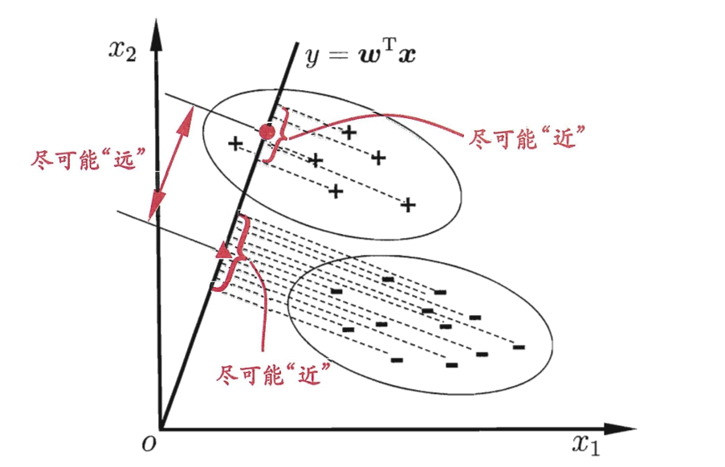
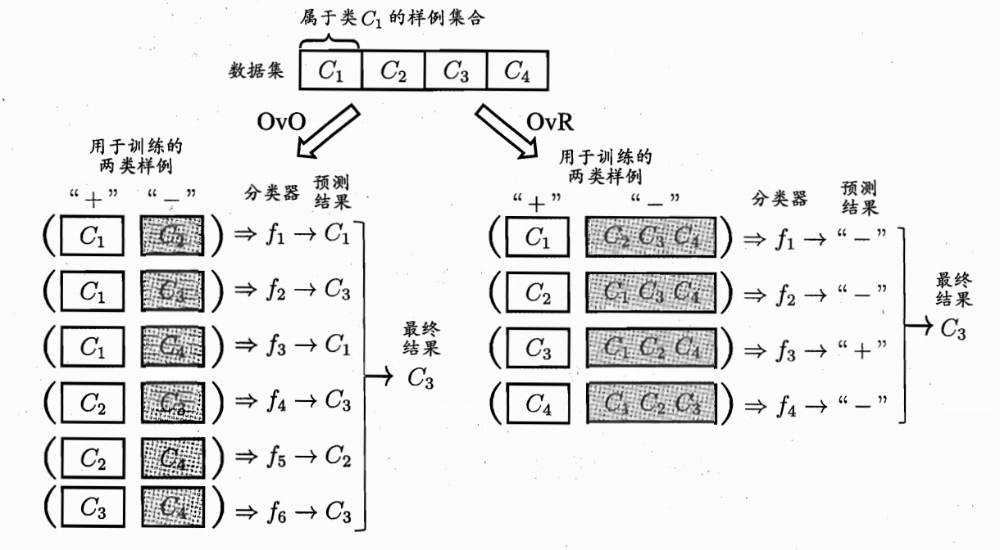
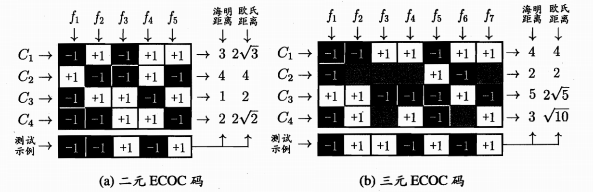

西瓜书线性模型
进入🍉的第三章啦！之前有看过李宏毅老师的课，但是这本书看起来还是比较吃紧，冲！
基本形式
linear model是通过属性的线性组合来进行预测的函数，用向量形式表达的话就是：
$$
f(x) = \omega^T x+b
$$
线性回归
最小二乘法：
$$
\omega = \frac {\sum_{i=1}^m y_i(x_i-\bar{x})}{\sum_{i=1}^mx_i^2-\frac 1m (\sum_{i=1}^mx_i)^2}
$$$$
b = \frac 1m \sum_{i=1}^m(y_i-\omega x_i)
$$多元线性回归
$$
\hat \omega^* = arg min(y-X\hat \omega)^T(y-X\hat \omega)
$$
其中$\hat \omega = (\omega;b)$,
$$
X = \begin{pmatrix}x_{11} & x_{12} & \cdots & x_{1d} & 1\\ x_{21} & x_{22} & \cdots & x_{2d} &1\\ \vdots & \vdots & \vdots & \ddots & \vdots \\ x_{m1} & x_{m2} & \cdots & x_{md} &1\\\end{pmatrix}
$$
求导可得：$2X^T(X\hat \omega-y)$如果$X^TX$为满秩矩阵（正定矩阵）[1]则可直接求唯一解，当实际情况中$X$的列数多于行数，不是满秩，则变为求解方程组，存在多组解，需要在其中选择最合适的，常见方法是使用正则化[2]
广义线性模型：
$$
y = g^{-1}(\omega^Tx+b)
$$
其中$g(.)$为单调可微函数，如$ln$
对数几率回归
如果需要用回归来做分类问题，最粗暴的是给一个零界点来判断（单位跃阶函数），但是他不是连续的也不可导，所以我们更普遍地使用”Sigmoid函数”，表达式为：
$$
y= \frac {1}{1+e^{-z}}
$$
将$z$代入为$\omega ^Tx+b$再转化形式为$ln \frac {y}{y-1} = \omega^Tx +b$其中$\frac {y}{y-1}$就是几率，用线性回归模型的预测结果去逼近真实标记的对数几率，因此较多”对数几率回归”，又叫”逻辑回归“，这是一个凸函数，可以用梯度下降法或者牛顿法来求其最优解[3]，关于求最优解的过程，包括将y看作后验概率估计，用极大似然法的内容这里不赘述，详见书P59页。
线性判别分析
线性判别分析(LDA)直观上来说就是我们想要把样本投影到一条直线上，根据直线上两样本的距离来判断他们是否是相似的，因此优化目标就是：同一类的样本占据的总长度尽可能近，不同类的样本他们的中心点尽可能原，翻译成数学语言就是：
$$
J = \frac {||\omega^T\mu_0-\omega^T\mu_1||_2^2}{\omega^T\sum_0\omega+\omega^T\sum_1\omega}
$$
对于两个样本要足够大，其中$\mu_i,\sum_i$分别代表样本的均值向量和协方差矩阵[3]，分子就是中心点距离足够大，分母就是协方差足够小。
推导最优解的过程略去(书P61)，但其从贝叶斯决策理论的角度来阐述，两类数据同先验、满足高斯分布且协方差相等时，可以达到最优解[4]。应用到多分类时，将样本投影到$d’$维空间，由于其维度小于数据原有的属性数量，且投影过程中使用了类别信息，因此也被视作典型的监督降维技术[5]。
多分类学习
处理多分类问题一般是需要将其拆分为多个二分类问题，然后再集成为最终结果。
拆分方法：
一对一(OvO)：每两个分类组合，最后看每个分类被选择的次数
一对其余(OvR)：如图所示，最后看每个预测结果的置信度
多对多(MvM)：选一些做正类，一些做反类，常用的方法是”纠错输出码”(ECOC)，如下图所示：
对N分类问题做M次划分，最后看每个分类的结果组成的编码，通过计算和各类编码的距离来做分类判断。这里说它是纠错码的原因就是对错误有一定的包容度。
类别不平衡问题
如果样例中的正反数量非常不一致，是很难训练出不错的效果的。通常我们判断是以0.5为界限，即$\frac {y}{y-1} >1$，但如果正反例数量不同，$m^+$和$m^-$分别代表正反例数目，则观测几率为$\frac {m^+}{m^-}$，使用”再缩放“则可以将判断式子修正为：
$$
\frac {y}{y-1} \times \frac {m^+}{m^-} >1
$$
但这个方法并不简单，还有另外两种方式可以修改这个比例：
- 欠采样：EasyEnsemble，拆分
- 过采样：SMOTE，不能简单重复
习题
后续扩展
[1] 正定矩阵的知识补充，我记得的是$P^TMP>0$，还有其可逆，但是其他的记不得了
[2] 正则化是啥也忘记了
[3] 协方差的具体含义忘记了
[4] 这个结论和贝叶斯决策的东西都不太了解
[5] 投影后维度降了，之前直观理解中的距离概念应该是怎样的呢
碎碎念
喜欢女孩和梧桐树的故事，那一段的风景